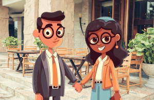

O amor dos pombinhos:
Em meio a tantas histórias que o tempo coleciona, a de Nycollas e Gabi se desenha como um daqueles contos raros, onde cada capítulo é escrito com cuidado, ternura e verdade. Não foi apenas um encontro de olhares ou uma coincidência bonita — foi destino. Um daqueles encontros que parecem ter sido escritos muito antes de acontecerem, como se o universo inteiro tivesse conspirado para unir dois corações que já se procuravam há muito tempo.
Apaixonados
Nycollas, com sua presença serena, sempre foi daqueles que observa o mundo com calma, mas sente com intensidade. Seu coração carrega uma profundidade silenciosa, que poucos entendem, mas Gabi viu isso de imediato. Não foi preciso que ele dissesse muito — seu olhar, seus gestos e a maneira como ele escutava diziam tudo. Em Gabi, ele encontrou algo raro: alguém que não apenas o compreendia, mas o acolhia por inteiro, com todas as suas luzes e sombras. Com ela, Nycollas encontrou não apenas um amor, mas um lar — aquele tipo de lar que vai além das paredes e dos móveis, e mora dentro do peito.
Gabi, por sua vez, é feita de luz. Seu sorriso tem o poder de acalmar tempestades, e sua alma carrega uma força delicada que inspira quem está por perto. Ela não precisou de muito tempo para entender que Nycollas era diferente.
Paixão tomou conta do coração
Havia nele um cuidado genuíno, uma lealdade que se via nos pequenos atos. Com ele, Gabi sentiu que podia ser vulnerável e forte ao mesmo tempo. Ele não a impedia de voar — ao contrário, era o vento constante que sustentava suas asas. Em Nycollas, ela encontrou um porto seguro, um companheiro que a escolhia todos os dias, mesmo nos dias mais difíceis.

O amor deles não é feito de exageros ou de aparências. É feito de pequenos grandes gestos — uma mensagem no meio do dia só pra dizer “pensei em você”, um abraço silencioso depois de um dia difícil, um riso compartilhado por algo bobo que só os dois entendem. Eles não precisam de palavras para se entenderem; basta um olhar, um gesto, uma presença. O silêncio entre eles nunca é vazio — é cheio de conforto e entendimento.
Juntos, Nycollas e Gabi já enfrentaram dias nublados, decisões difíceis e momentos de incerteza. Mas em todos eles, o amor nunca vacilou. Pelo contrário: foi nesses momentos que eles mais cresceram, mais se uniram, mais se amaram. Porque o amor verdadeiro não é feito só de dias perfeitos — é construído nos dias comuns, nas escolhas diárias de permanecer, de cuidar, de confiar. Eles têm sonhos, muitos sonhos. Alguns pequenos, como viajar juntos para aquele lugar que sempre falam. Outros maiores, como construir uma vida a dois, passo a passo, com raízes profundas e asas largas. O mais bonito é que todos esses sonhos são sonhados juntos. Cada plano, cada ideia, cada futuro imaginado tem o nome dos dois escrito com carinho.
Então é isso! Espero que você tenha gostado do nosso artigo com essa curiosidade sobre um amor correspondido sem traição